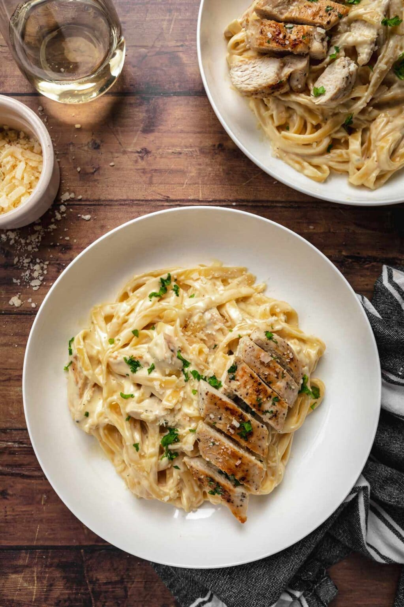

Description
This pasta dish combines alfredo sauce and fettuccine noodles with chicken to deliver a delicious meal.
Ingredients
Pasta and Chicken
- 1 pound fettuccine pasta
- 2 boneless and skinless chicken breasts
- 1/2 teaspoon Kosher salt
- 1/4 teaspoon coarse ground black pepper
- 2 tablespoons olive oil
Alfredo Sauce
- 1/2 cup unsalted butter
- 2 cups heavy cream
- 2 cloves minced garlic
- 3 cups Parmesan cheese
- 1/2 teaspoon coarse ground black pepper
Steps
- Cook pasta 1 minute shy of box directions and then drain and set aside.
- Butterfly the chicken into 4 thin fillets.
- Season with salt and pepper.
- Add olive oil to large deep skillet on medium-high heat.
- Cook on each side for 6-8 minutes until well browned, then remove from pan.
- Add butter and garlic to a medium saucepan on medium heat.
- Whisk in heavy cream and bring to a simmer.
- Cook for 3 minutes, stirring often.
- Add in Parmesan cheese and black pepper, stirring until cheese is melted and sauce has thickened.
- Cut the chicken into strips, add back into pan.
- Add pasta to the pan and toss.
- Serve with additional Parmesan cheese if desired.
Return to top
Home